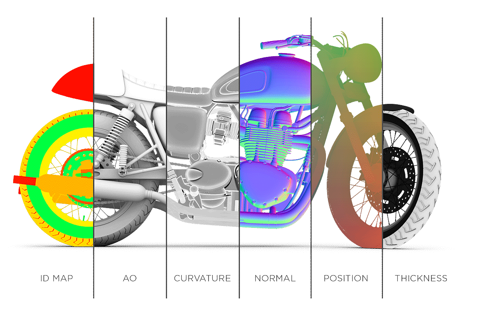

The Substance Bakers are a toolset of advanced algorithm to compute mesh based information into texture files. They can be used by any artist with a 3D mesh to take advantage of advanced texturing methods. Baking is a process at the core of the Substance software workflow in order to offer powerful tools and automated texturing.
This documentation covers the fundamentals of baking and the common issues and mistakes that can be encountered when dealing with this process.
